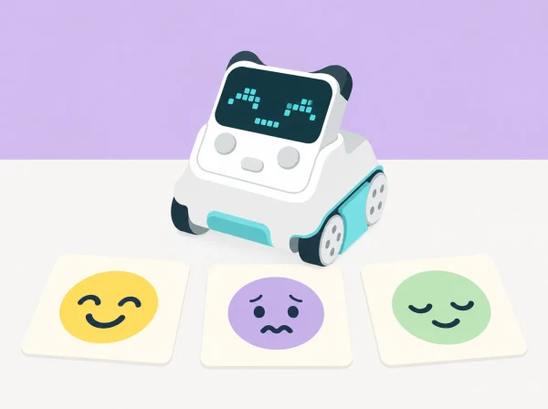

Caretes de la plaça
🏷️ Benestar i convivència
🌱 Situació, repte i intenció
no detecta ni interpreta les emocions de les persones.
🎯 Aprenentatges i vocabulari
expressar idees amb signes gràfics, observar que una mateixa situació pot provocar reaccions diferents, programar una resposta a un esdeveniment, dissenyar una imatge LED amb píxels, ordenar una narració i parlar de quan una persona pot necessitar suport humà.
🧰 Materials i preparació
Prepareu un Codey Rocky amb bateria, ordinador amb mBlock 5 i connexió USB, targetes amb situacions fictícies, fulls de quadrícula per a dissenyar imatges LED, pictogrames d’emocions diversos i un espai on provar el robot. Confirmeu que el dispositiu Codey està seleccionat en mBlock i que el mode Upload funciona. Els blocs Emotion permeten usar expressions predissenyades; els blocs Looks poden mostrar imatges creades encenent píxels de la pantalla. La disponibilitat exacta pot variar amb la versió del programari i el firmware.
Prepareu un acord de conversa segur: no es pregunta «com estàs de veritat?» ni es demana relatar una experiència personal. Totes les situacions i personatges són imaginaris. No useu so ni gir del giroscopi com a prova que una emoció concreta està present. Ningú no ha de gravar veu ni representar una expressió facial o corporal per a demostrar aprenentatge.
📅 Seqüència didàctica
Una escena, diverses interpretacions (45 min)
Fase 1 · Activem i prediem
Presenteu una situació fictícia: la granota arriba a la plaça i troba l’estand tancat. Oferiu lectures possibles: pot estar decebuda, curiosa per una sorpresa, tranquil·la perquè sap que tornarà a obrir o pensativa. Predigueu quines pistes del relat han portat a cada interpretació.
Fase 2 · Explorem i construïm
En equips, trieu una interpretació per al personatge i representeu-la amb pictogrames, paraules o colors lliures. No imposeu una associació fixa entre color i emoció; cada equip pot triar una combinació diferent si n’explica la intenció.
Fase 3 · Expliquem i registrem
Afegiu una targeta «no ho sabem» i registreu dues interpretacions possibles per a la mateixa escena. Expliqueu quina pista del relat sosté cada lectura.
Fase 4 · Apliquem i millorem
Intercanvieu les targetes amb un altre grup. Reviseu la representació si només s’entén quan qui l’ha creada n’explica la intenció.
Fase 5 · Comprovem i reflexionem
Compartiu si el personatge podria sentir una altra cosa i per què una cara sola no permet saber què sent una persona real.
Programem una expressió i la revisem (45 min)
Fase 1 · Activem i prediem
Abans d’executar el programa, predigueu quina imatge apareixerà en prémer el botó A i quina acció l’activa. Recordeu que el robot mostra una imatge programada, no que «sent» una emoció.
Fase 2 · Explorem i construïm
Connecteu Codey a mBlock 5. Seguint l’estructura del tutorial bàsic oficial, associeu el botó A a una expressió predissenyada dels blocs Emotion. Carregueu-la i comproveu que s’activa en prémer el botó; després, trieu una altra expressió disponible i modifiqueu el programa.
Fase 3 · Expliquem i registrem
Anoteu l’esdeveniment d’entrada, l’expressió triada i la resposta observada. Compareu les dues imatges com a opcions gràfiques: quines formes o elements les diferencien?
Fase 4 · Apliquem i millorem
Si una expressió es pot interpretar de diverses maneres, afegiu un context narratiu que n’aclarisca la intenció. Reviseu la imatge o l’esdeveniment i torneu a provar-la.
Fase 5 · Comprovem i reflexionem
Expliqueu què ha provocat que aparega la imatge i què no pot saber el programa.
Dibuixem una careta amb píxels (45 min)
Fase 1 · Activem i prediem
En una quadrícula que represente la pantalla LED de Codey, predigueu com es veurà una cara amb pocs píxels encesos i quins detalls seran llegibles des de certa distància.
Fase 2 · Explorem i construïm
Dissenyeu una expressió original i marqueu clarament els píxels buits i encesos. Programeu el botó A perquè mostre la imatge durant un temps breu; si el grup està preparat, afegiu una segona imatge o una espera perquè la careta canvie dins de la narració. No cal animació, so ni giroscopi.
Fase 3 · Expliquem i registrem
Compareu el disseny en paper amb la pantalla. Doneu a una altra parella el context fictici sense explicar la intenció gràfica i demaneu-li que descriga què interpreta.
Fase 4 · Apliquem i millorem
Si costa llegir la imatge, canvieu una sola característica —separació dels ulls, forma de la boca o durada— i proveu-la de nou. Després, qui ha programat pot explicar què volia comunicar.
Fase 5 · Comprovem i reflexionem
Anoteu quins píxels han canviat la lectura i què ha entés l’altra parella.
Contem una història i pensem en els límits (45 min)
Fase 1 · Activem i prediem
Ordeneu tres targetes —inici, complicació i desenllaç— per al personatge de la plaça. Predigueu en quin moment una expressió digital pot ajudar a entendre el canvi de situació.
Fase 2 · Explorem i construïm
Programeu una expressió per a un moment del relat i una altra només si ajuda a explicar el canvi. Prepareu una presentació amb targetes, narració, gestos o demostració del Codey; ningú no ha d’usar la veu ni representar una expressió corporal.
Fase 3 · Expliquem i registrem
L’audiència proposa dues interpretacions possibles en lloc d’endevinar una emoció «correcta». Registreu quines pistes del relat o de la imatge han ajudat.
Fase 4 · Apliquem i millorem
Reviseu una expressió o una escena a partir del retorn. Si algú expressa malestar, no demaneu al robot que el diagnostique ni a la classe que el resolga: oferiu l’acompanyament adult previst pel centre.
Fase 5 · Comprovem i reflexionem
Expliqueu la diferència entre representar una emoció i detectar-la, i tanqueu amb una frase sobre el límit del dispositiu.
🧪 Evidències i avaluació
Recolliu targetes d’interpretació, esbós LED, codi i seqüència narrativa. Observeu si l’alumnat:
- proposa més d’una interpretació per a una situació fictícia;
- relaciona un esdeveniment programat amb l’aparició d’una expressió;
- dissenya i revisa una imatge amb píxels de la pantalla;
- ordena una història i explica per què hi ha triat aquella expressió;
- diferencia el símbol programat del coneixement de l’estat real d’una persona.
No s’avalua la capacitat d’identificar emocions d’altres persones, compartir vivències personals ni mostrar una expressió facial concreta. S’avaluen les decisions de disseny, la comprensió del programa i el respecte per les interpretacions múltiples.
♿ Participació, accessibilitat i seguretat
Permeteu expressar una idea amb color, gest, paraula, dibuix, símbol o selecció de targetes, i no feu dependre el significat només del color. Oferiu temps per a observar i no forceu la presentació davant del grup. La veu, els efectes sonors i la gravació són opcionals. Useu targetes amb contrast i formes diferenciades; qui ho necessite pot descriure el codi mentre una altra persona el manipula.
El racó de lectura o de calma del centre continua sent un espai humà d’acompanyament, no una funció que la mascota robòtica puga substituir.
🔗 Referents i adaptació
La seqüència s’inspira en Case 1: Codey Rocky expresses emotions, que programa una expressió Smile amb un esdeveniment de botó, i en Case 2: DIY facial expressions, que mostra una imatge personalitzada i una espera. El relat de la plaça, les situacions fictícies, les interpretacions múltiples i les targetes són propis; no s’atribueix al robot cap capacitat de lectura emocional.